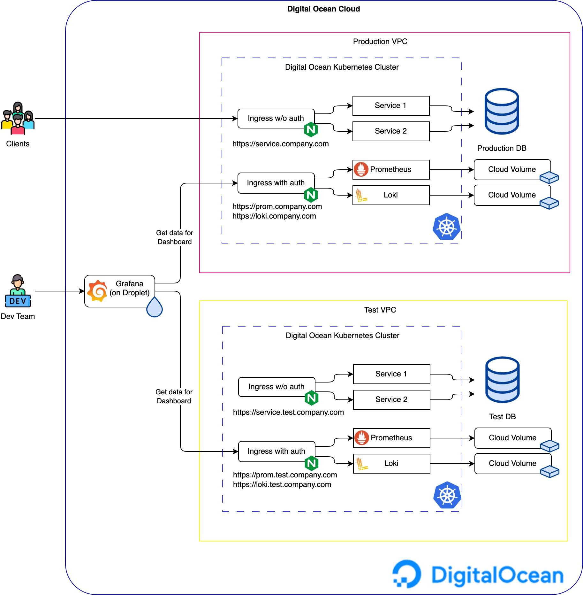
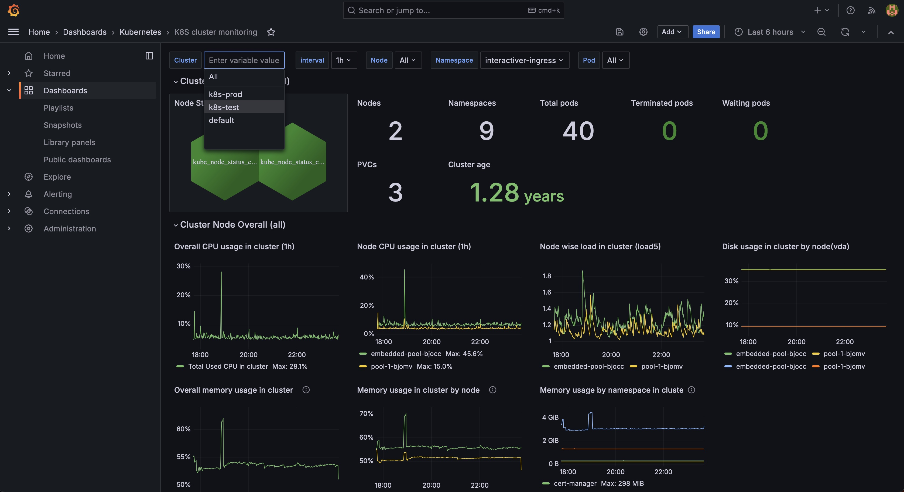

The internet is full of ready-made solutions for every taste, but problems arise when they don't fit your needs. That's when it's time to come up with something custom.
This time, the challenge was to collect metrics from two K8S clusters located in different VPCs.
It seemed like a simple task:
However, the issue is that Digital Ocean Cloud doesn't support VPC Peering as of this writing (link to documentation), meaning all metrics would leave the cloud, go to the internet, and then come back, causing unnecessary traffic costs.
To avoid this, we had to come up with alternative solutions that would work for a small startup while avoiding extra expenses.
So, here's the solution I implemented.
There are three VPCs. Two of them host the clusters, and the third one contains the supporting tools, including a server with Grafana.
Grafana connects to each cluster and pulls data for the dashboard. This setup ensures that traffic only flows when the dashboard is being viewed. Authentication is handled at the ingress.
For the implementation, I chose the following tools:
I use Terraform to provision the server for the subsequent Grafana installation, as well as to create DNS records.
I use an Ansible role to configure the server, including the installation and launch of all necessary services:
Prometheus and Grafana Loki are installed in the K8S clusters, from where the metrics and logs are collected.
I have a standard Ansible role written with tasks and templates to automate the setup and configuration.
➜ monitoring-prometheus git:(main) tree monitoring_role
monitoring_role
├── README.md
├── defaults
│ └── main.yml
├── files
│ ├── grafana-k8s-cluster-dashboard.json
│ ├── grafana-k8s-logs-dashboard.json
│ └── grafana-k8s-volumes-dashboard.json
├── handlers
│ └── main.yml
├── meta
│ └── main.yml
├── tasks
│ ├── 01_wait_for_initialization.yml
│ ├── 02_install_certbot_and_configure_nginx.yml
│ ├── 03_install_docker.yml
│ ├── 04_add_monitoring_user.yml
│ ├── 05_copy_configuration_files.yml
│ ├── 06_run_containers.yml
│ ├── 07_enable_ufw.yml
│ └── main.yml
├── templates
│ ├── dashboards.yaml.j2
│ ├── datasources.yaml.j2
│ ├── default.j2
│ └── docker-compose.yml.j2
├── tests
│ ├── inventory
│ └── test.yml
└── vars
└── main.yml
The Ansible role handles the issuance of certificates, installs Nginx, sets up Grafana with dashboards, and starts Docker compose.
Here is an example of how the final dashboard looks:
You don't always need to rely on out-of-the-box solutions, especially when they don't fit your needs. With a bit of creativity and the right open-source tools, you can build a custom solution that’s both effective and cost-efficient. In this case, combining Prometheus, Grafana, Loki, and a few other tools, I managed to set up a reliable monitoring system that works perfectly for a small startup without breaking the bank.
I hope you enjoyed this article.
You can find all of my code in my GitHub repository: https://github.com/andygolubev/monitoring-prometheus
Feel free to connect with me on LinkedIn: https://www.linkedin.com/in/andy-golubev/